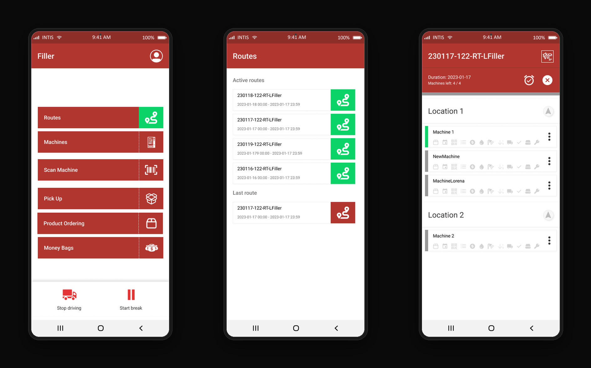
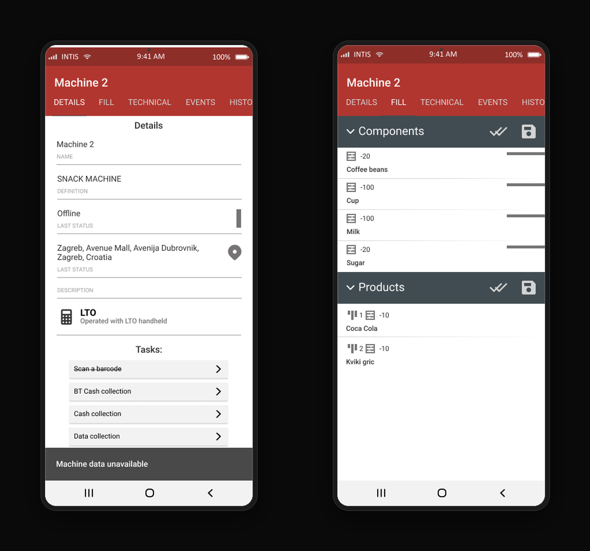
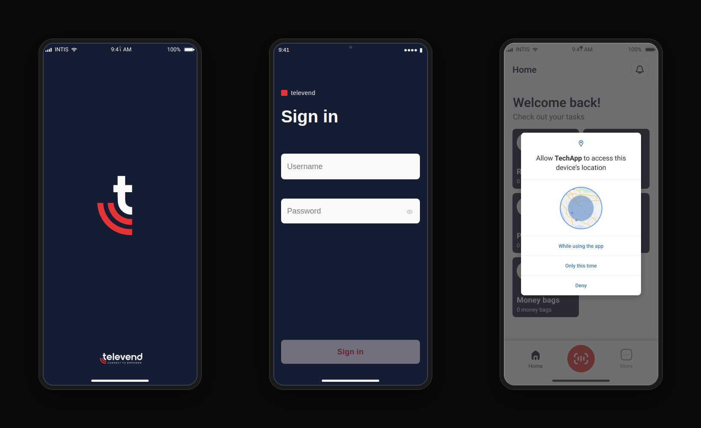
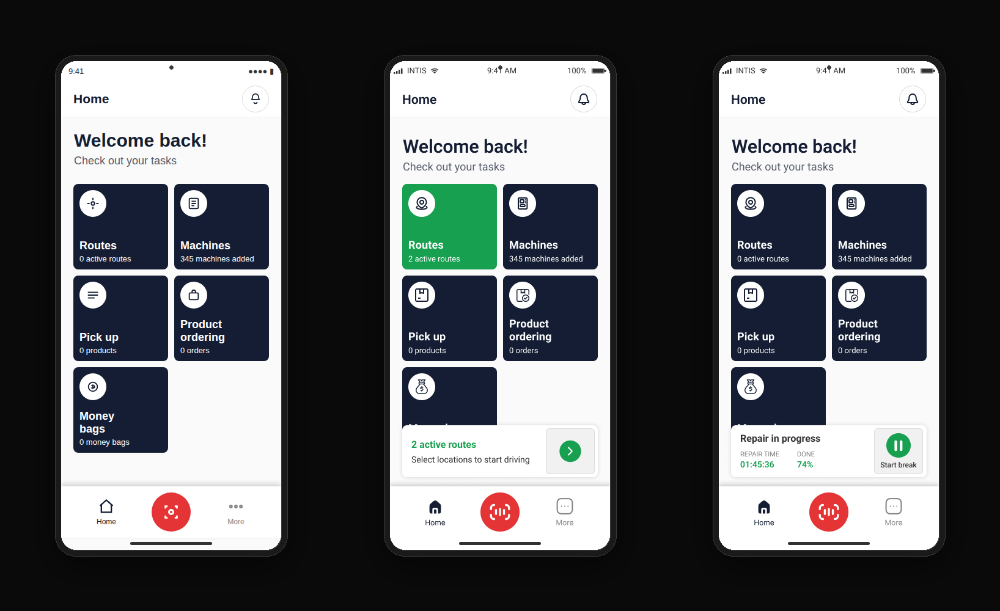
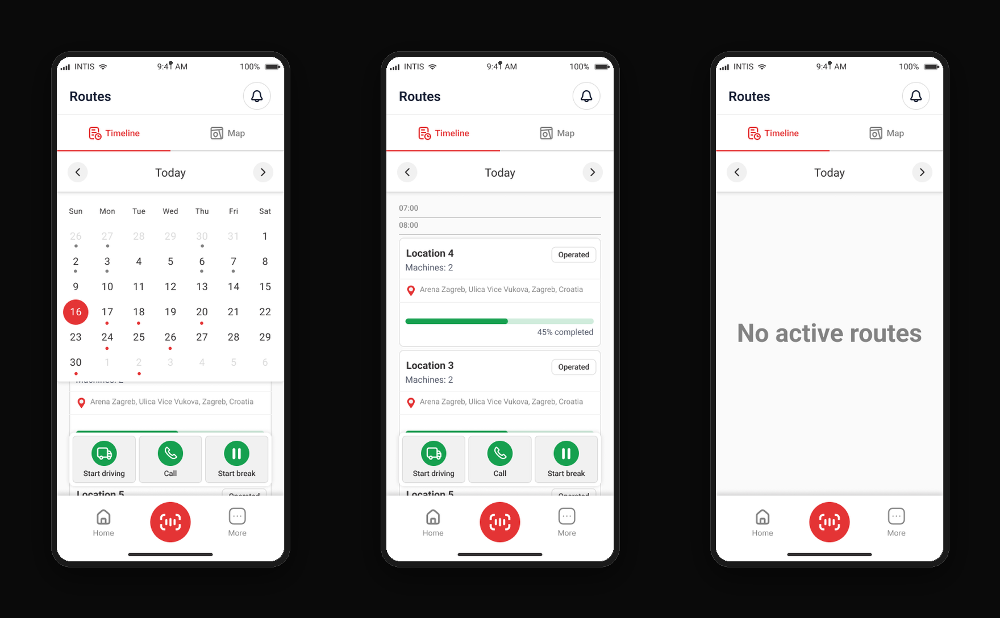
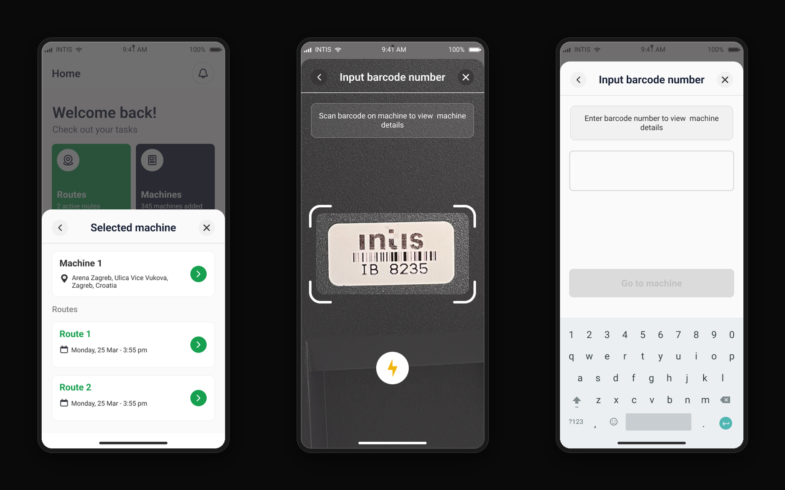

TechApp
Unifying two field-service tools into one app for technicians who fill and service vending machines — built at Intis for Televend, a platform for day-to-day vending and self-service operations.
Summary
Field technicians who filled and serviced vending machines had to work across two completely separate apps — one for restocking machines, another for technical service and repairs — even though it was usually the same person doing both jobs on the same route. Switching between apps mid-shift slowed people down and made simple tasks feel unnecessarily complicated.
The problem
- Two disconnected tools for one continuous workflow
- Duplicated navigation, duplicated login, duplicated machine data
- No single view of a technician's day — routes, machines, repairs, restocking scattered across apps
let one technician handle both restocking and repairs on the same route, without ever switching apps mid-shift?
Visual direction
The navy-and-red palette isn't arbitrary — it's Televend's own brand identity, carried through from splash screen to every action button, which helped the merged app feel like one coherent, official tool rather than a patchwork of the two it replaced.
Before
The original app was function-first but visually dense — a dark red header, dense text-based lists, and multi-step modals for simple inventory updates.

Home, routes, route detail

Machine details, inventory fill
My role
I led the full redesign end-to-end: running discovery conversations with stakeholders and the business analyst, translating requirements into flows and wireframes, and working closely with developers through implementation to make sure the design held up technically.
Designing for the real user
The people using this app aren't always comfortable with technology, and many don't share the same first language as the interface. That shaped almost every decision:
- Large, high-contrast buttons that are easy to tap without precision
- Short, keyword-style labels instead of full sentences — "Start driving," "Call," "Pick up" — so meaning comes through even with limited language proficiency
- Icons paired with every label, never icons alone, so the app can be understood at a glance
- A flat, task-first home screen instead of nested menus — one tap to the thing you need
- Clear status states built with color and simple progress bars, so technicians always know where they stand without reading dense text

Splash, sign in, location permission

No active routes, home, repair status

Timeline, progress, empty state

Machine modal, scan, entry
Outcome
The result is a single app that follows the technician's actual day: check the route, drive, service or restock a machine, log it, move on — with the timeline view, machine detail modals, and repair-progress states all living in one consistent system instead of two disconnected ones.